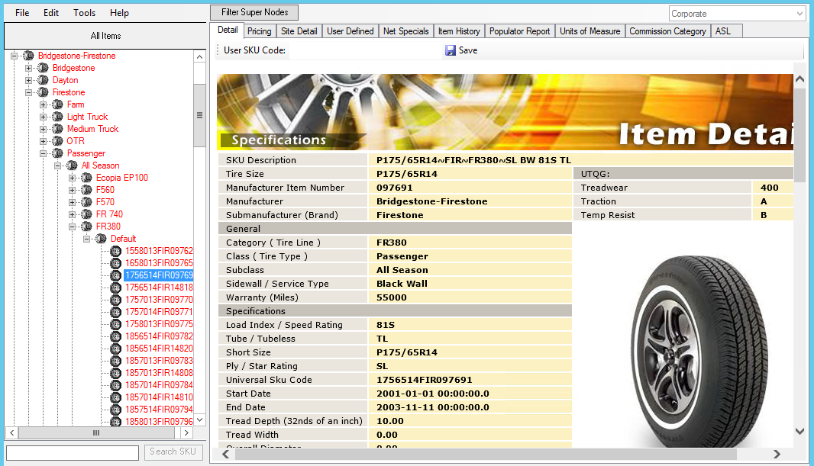
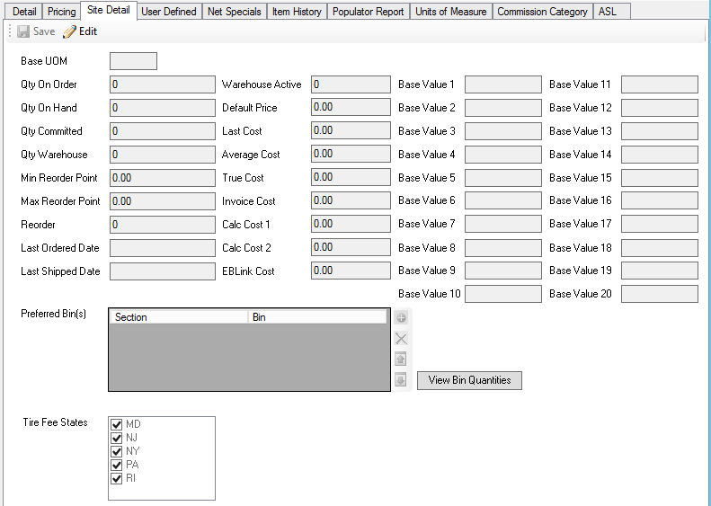
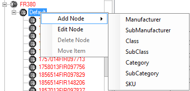
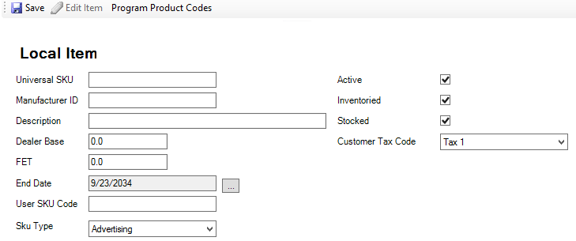
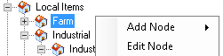
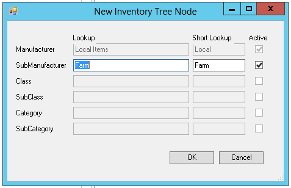
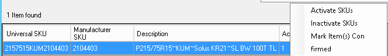
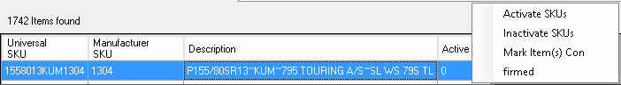

Inventory Management
Inventory Management Module is designed to create/manage inventory items, define price levels and rule assignment, maintain cost and base value fields, manage tire fee states, display item detail for TDC (Tire Data Central) and house additional item information as desired.
Home Screen: Select Inventory from module toolbar and then

Inventory Tree Structure
Contains 6 levels/branches for tires, parts, retreads, wheels, non-inventoried items, etc. Tree structure maintains commonality for more effective reporting.
- Designates item that is housed in TDC
- Designates item that is created locally
Items Listed in red are inactive items
Manufacturer Defines Manufacturer Name (i.e. Bridgestone-Firestone)
Sub-Manufacturer Defines multiple individual brands under the Manufacturer umbrella
(i.e. Bridgestone, Firestone, Dayton, Fuzion….)
Class Defines tire class (i.e. passenger, light truck, medium truck)
Sub-Class Defines type of tire (i.e. All season, All Terrain, Touring….)
Category Defines tire line (Ecopia, Destination AT, FR380)
Sub-Category Defines additional information of the tire line (i.e. default, Takeoff,
Studded….)
- Use +/- symbols to open the level of the tree structure or enter a specific item number to go directly to item level.
Enter item number and select Search SKU
Allows the ability to limit the view of the tree structure to specific Sku types (i.e. tires, retreads, catalog parts….)
Detail Tab
Tire database of over 105,000 items maintained by TASCO Software providing tire specifications, pictures, comparisons, features and warranty information. This information is also printable and can be emailed from within the inventory search screen.
Pricing Tab
Allows you to set and maintain price rules within created price levels based on any level of the inventory tree. Refer to Price Level Maintenance and Price Rule Assignment

Site Detail Tab
Allows visibility to quantities on hand, committed and ordered along with the ability to view last and average cost. Also allows for population, editing or loading of specific fields designated in white with the selection of . Save when editing is complete.
- Base Value Fields (20) are editable/loadable fields that can be used for price level base, default pricing, etc.
- True Cost, Invoice Cost, Calc Cost 1 and Calc Cost 2 are editable/loadable fields that can be used for price level base and/or default cost for invoices, purchase orders, adjustments and receipts
- Min/Max Reorder Points are editable/loadable fields to set reorder requirements
- Last Ordered/Shipped dates will automatically update the last date specified item was ordered and/or shipped
- Preferred Bin(s) used by TireWorks HD Bin Management Module and with 3rd party inventory management software
- If using TireWorks HD bin management, refer to bin management procedures
- If using integrated software, this field will need to be flagged for each item that will be managed within the integrated warehouse management software
- Select + to add Warehouse Management designation and select from list
- Highlight and select X to remove Warehouse Management designation
- Tire Fee States – Those states that tire tax will be charged based on tire class
User Defined Tab
Provides 35 additional informational fields that can be titled and populated for report use only. These consist of a combination of check box fields, various character fields, integer fields, and date fields. Might be used for data such as equivalencies if using integrated routing software.
Net Specials Tab
Provides the ability to set net special pricing for a specified number of units per Sku. This will override any price level and/or customer pricing that is defined at the inventory pricing level or at the customer pricing level. This can also be managed with greater functionality within theselection of the inventor module. Refer to the Net Specials procedures
Item History Tab
Provides an overview of previous 12 months item history of a specified item. Will display by month total sales dollars, sales units, sales average dollars, GP average dollars, receipt dollars, receipt quantity, receipts average dollars and receipts % change dollars.
Populator Report Tab
DO NOT USE
Units of Measure Tab
Allows functionality to set additional units of measure, assign units of measure at multiple order types or modules. Also provides ability to define dimension settings and weight setting. UPC data would also be housed here. Refer to Unit of Measure Procedures
Commission Category Tab
Allows item to be assigned to one commission category
ASL Tab
Displays locations where selected items have inventory available including transfer price and average cost.
- Will display a message stating “There are no locations with non-zero quantity for this item” if there aren’t any other locations with quantity available
 Note: All tabs will allow location to be changed and edited by choosing dropdown and selecting desired location.
Note: All tabs will allow location to be changed and edited by choosing dropdown and selecting desired location.
Adding New Item
This is done at the Sub-Category level of the inventory tree

Highlight desired sub-category (Generally Default)- Right Click
- Select Add Node
- Move to right and select SKU
- Will display a local item setup record for population (displayed below)

- Universal SKU – Populate as it would be created in TDC (Tire Data Central) including three segments of Universal SKU (Simple tire size, three-character mfg. code, and mfg. item number i.e. 2056015FIR123456)
- Item will then automatically move to TDC if the item becomes available and will have ability to view tire detail
- Manufacturer ID – Enter manufacturer item number
- Description – Enter description as you wish it to appear in search results and document printing
- Dealer Base – Enter dealer base if used
- FET – Enter FET if item is subject to FET (Generally Medium Truck 19.5 and larger)
- End Date – Automatically defaults to date in future. This is used to designate discontinued product
- User SKU Code – populate data specific to your business such as Inventory Management Item Number, if different than either universal Sku or manufacturer ID
- Sku Type – Set appropriate Sku type base on item being created
- Active – Automatically defaults to active unless check mark is removed
- Inventoried – Automatically defaults to inventoried unless check mark is removed
- Stocked – Automatically defaults to stocked unless check box is removed
- Stocked cannot be set without Inventoried being checked
- Customer Tax Code – Select appropriate tax code for item being created
- Program Product Codes – This would be populated if item being added will be used in National Account submission
IMPORTANT: Always populate site detail tab when creating a new item. See screenshot above
-
- Select Site Detail tab
- Select Edit
- Populate required information (cost fields, base value fields, bin assignment, tire fee states, etc.)
ScreenshotMoving an Item
This is done at the Item level of the inventory tree for Local Items only
- Highlight desired Item
- Right Click
- Select Move Item
- Select appropriate branches based on desired move
- Select OK
Editing Node
Allows local item level names to be changed at any of the six levels along with the ability to activate by level.
- Highlight desired level
- Right Click
- Select Edit Node

- Change name of highlighted level

- Select OK
Activate/Inactivate Skus
Allows one or more items to be activated or inactivated
- If SINGLE Sku, enter Sku in search box
- Right click on Active column below search box
- Select Activate or Inactivate depending or preference
- Active = 1
- Inactive = 0

Option 1 – Multiple Skus
- If MULTIPLE Skus from same branch level, highlight branch level
- Returns number of items found
- Highlight first line item in results
- Hold shift key and scroll down
- Highlight last line item
- Right click on Active column below search box
- Select Activate or Inactivate depending or preference
- Active = 1
- Inactive = 0

Option 2 – Multiple Skus
- If MULTIPLE Skus from same branch level, highlight branch level
- Highlight desired level
- Right Click
- Select Edit Node
- Check active box to right of highest branch to activate
- Select OK